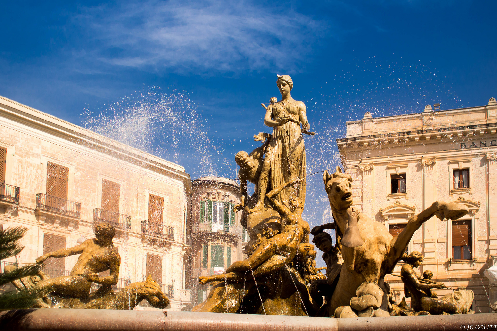
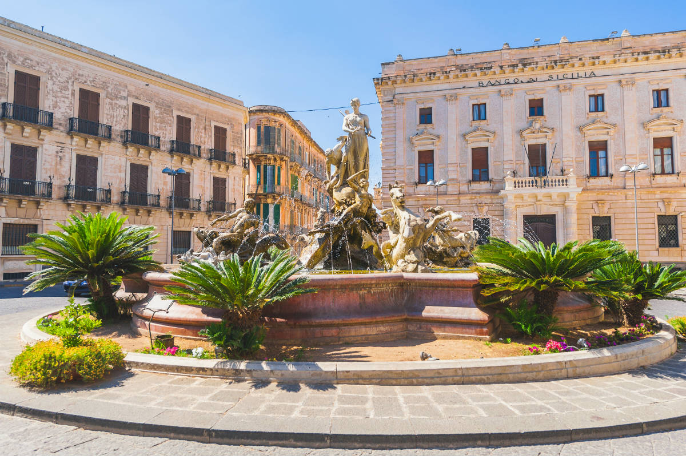
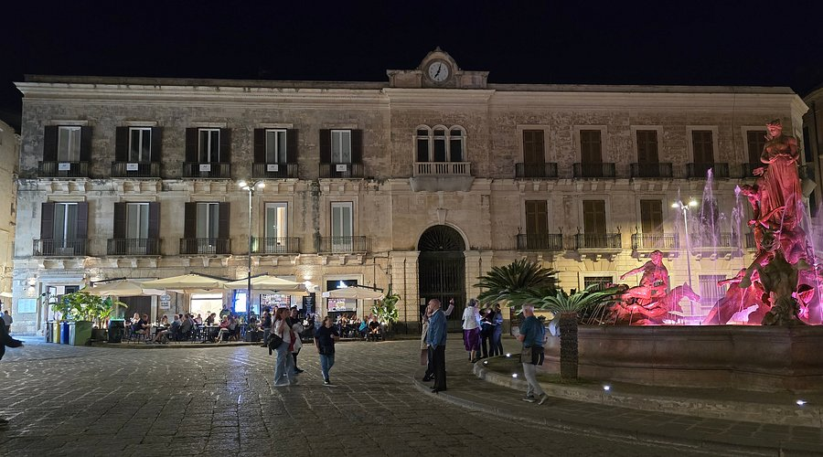

Scan me!
Scansiona il codice QR per raggiungere Piazza Archimede.

Piazza Archimede è il cuore pulsante di Ortigia, un salotto barocco dove l’eleganza dei palazzi nobiliari fa da cornice alla monumentale Fontana di Diana. La leggenda narra che Diana, per salvare la ninfa, la trasportò dalle sponde della Grecia fino a Siracusa, facendola sgorgare come fonte d'acqua dolce proprio in riva al mare.
Tra palazzi nobiliari di epoca medievale e altri del periodo fascista, questa piazza si presta come sfondo ad una delle fontane più suggestive di Ortigia: la Fontana di Diana (o Artemide), opera dello scultore Giulio Moschetti nei primi anni del ‘900. Questa fontana rappresenta un punto di riferimento per cittadini e turisti, incantati dalla maestosità della dea e dalla narrazione scolpita nelle sue forme. E come nelle più affascinanti leggende, qui giace un mito, quello della ninfa Aretusa.

La fontana di Diana è dedicata alla dea della caccia, protettrice delle donne e delle selve, identificata con Artemide nella mitologia greca. A Siracusa, Diana è una figura particolarmente venerata perché collegata alla leggendaria ninfa Aretusa, protagonista di uno dei miti più affascinanti dell’antichità classica.
La statua raffigura, oltre ad Aretusa, con un braccio teso sul viso come a volersi proteggere, la dea della caccia Artemide, protettrice delle ninfe (raffigurata con arco e faretra) e Alfeo, un fiume diventato uomo che vuole afferrare la ninfa per tirarla a sé. La dea Diana però riuscirà ad impedirglielo trasformando la giovane in fonte: la Fonte Aretusa.

Scansiona il codice QR per raggiungere Piazza Archimede.